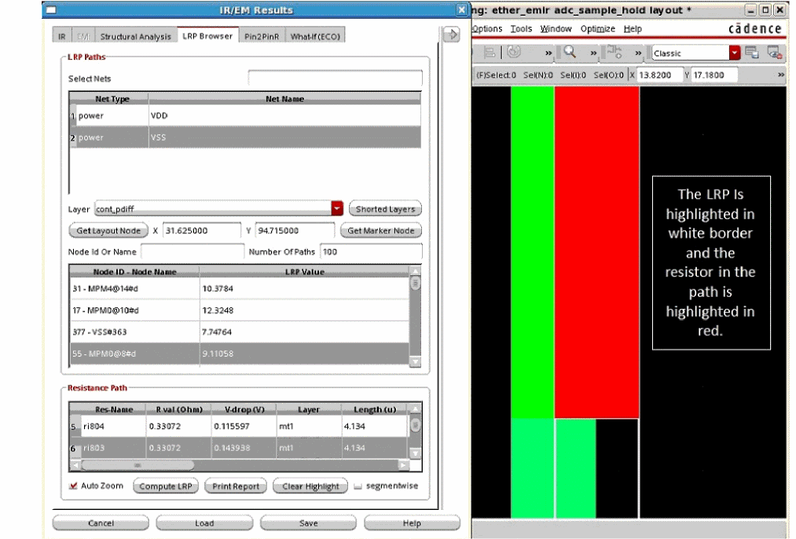
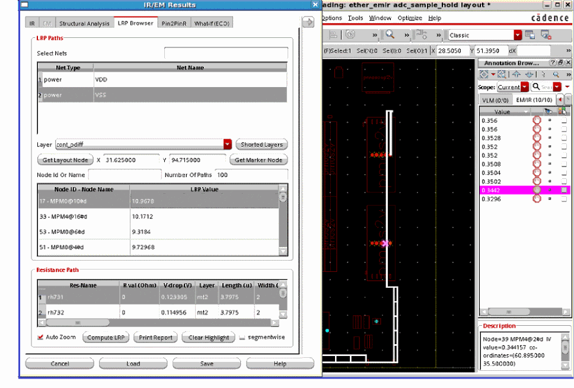

12
Least-Resistive Path Analysis
The Least-Resistive Path (LRP) analysis helps you identify weakly connected instances in the design during early stages of power planning. The resistance for an instance pin is calculated as the total resistance along the least resistance path. If an instance has multiple power pins connected to the power grid, the LRP plot uses the pin with the worst (highest) resistance value to plot the instance-based data. This plot highlights the current path for the selected instance to the voltage source. A long LRP usually results in high resistance and potentially high voltage drop.
In addition to identifying and displaying the worst IR drop violations, the LRP analysis feature in Voltus-Fi-XL lets you plot LRP on demand for any node. You can view the LRP for any high IR drop node by selecting it in the layout. There are two options provided in the GUI, Get Layout Node and Get Marker Node, to let you select a node on the GUI and view its LRP and to select an object in Annotation Browser and view the LRP for the node on the selected marker.
Related Topics
- Running LRP Analysis in GUI Mode
- Running LRP Analysis in Batch Mode
- Plotting the Least Resistive Path (LRP) (video)
- IR/EM Results Form — LRP Browser Tab
Running LRP Analysis in GUI Mode
The main requirements to run LRP analysis are as follows:
-
Only one net must be selected for LRP analysis.
The LRP analysis feature works for only one net at a time. However, in a power-gated design, the LRP plot is displayed for both the always-ON net and the switched net. - The selected net must have at least one pin location or voltage source location.
- The selected net must have nodes connected to it.
To run LRP analysis in GUI mode, do the following:
- Click the IR tab of the IR/EM Results form.
- Under Results, load the IR drop analysis results.
- Select a net and click Show Plot.
-
In the LRP Paths section of the LRP Browser tab, select the net for which you want to run LRP analysis.
The net selected in the IR tab is selected by default. -
Select a layer from the Layer list and click Compute LRP.
The LRP values of all nodes of the selected net are populated in the LRP table. -
Select a node in the LRP table.
All resistors in the least-resistive path of the node are displayed in the resistance path table. -
Select a resistor in the resistance path table.
The LRP plot is highlighted with a white border, and the resistor is highlighted in red in the Virtuoso layout window.
Related Topics
- Running LRP Analysis in Batch Mode
- Least-Resistive Path Analysis
- Plotting the Least Resistive Path (LRP) (video)
- IR/EM Results Form — LRP Browser Tab
Running LRP Analysis in Batch Mode
To run LRP analysis in batch mode, do the following:
-
Run the
load_ir_resultscommand to load the IR drop analysis results. -
Run the
print_rlrp_nearest_subnode_on_layercommand to get details about the nearest subnode on a metal layer, which is present in the least-resistive path of a source-drain tap node. -
Run the
print_rlrp_reportcommand to print the RLRP report.
Related Topics
- Running LRP Analysis in GUI Mode
- Least-Resistive Path Analysis
- Plotting the Least Resistive Path (LRP) (video)
- IR/EM Results Form — LRP Browser Tab
Shorting Layers for LRP Analysis
While computing LRP for a node or instance, you can short specific layers. When you do this, all resistance on the specified layer is shorted, that means, the LRP display shows a value of 0 for all resistors on the shorted layer.
To short a specific layer for LRP analysis:
- Click Shorted Layers on the LRP Browser tab of the IR/EM Results form.
- In the Filters pop-up window, select the layers you want to short.
When a layer is shorted, the R val (Ohm) column in the resistance path table shows a value of 0 for all resistors on that layer. In the following example, the LRP value for resistor, rh740 on shorted layer, mt2 is 0.
Analyzing LRP in Power-Gated Designs
In Voltus-Fi-XL, you can view and analyze the LRP plot in power-gated designs. An always-ON net LRP plot shows LRP path for all nodes in the always-ON net as well as for all nodes connected to the switched net.
To view the LRP plot in a power-gated design:
- In the IR tab of the IR/EM Results form, load the IR drop analysis results in the Results section.
-
Select a net, click Plot Powergate Nets, and then click Show Plot.
When you click Plot Powergate Nets, the selected net becomes an always-ON net, and all switched nets for the selected always-ON net also get selected. - In the LRP Paths section of the LRP Browser tab, select the net for which you want to run LRP analysis. The net selected in the IR tab is selected by default.
-
Select a layer from the Layer list and click Compute LRP.
The LRP values of all nodes of the always-ON net and the switched net are populated in the LRP table. -
Select a node in the LRP table.
All resistors in the least-resistive path of the node are displayed in the resistance path table. -
Select a resistor in the resistance path table.
The LRP plot is highlighted with a white border, and the resistor is highlighted in red in the Virtuoso layout window.
Analyzing LRP in Annotation Browser
You can view and analyze the LRP for a node on the selected marker in Annotation Browser. When you select a violation marker in the browser, it is highlighted in the layout. If the marker is associated with a node name, you can view the LRP for the node. This is particularly useful when either REffective or the transistor voltage plot is being shown and you want to see the LRP for the selected marker node.
To view the LRP values of a node on a violation marker:
- In the IR tab of the IR/EM Results form, load the IR drop analysis results in the Results section.
- In the Net Plot section, select Rail Analysis as IV - Transistor Voltage or REffective - Effective Resistance.
- Select a net and click Show Plot.
- In the Action section in the expanded IR/EM Results form, select Violation Browser.
-
On the EM/IR tab of Annotation Browser, select a violation marker.
The violation marker is displayed in the layout. -
On the LRP Browser tab of the IR/EM Results form, click Get Marker Node.
The information of the node on the marker - including layer name, X and Y coordinates, node ID and name, and LRP value - is populated in the LRP Browser tab. -
Click the node in the LRP table and then click Compute LRP.
The LRP plot of the node is highlighted in white in the Virtuoso layout window as shown below.
RLRP Report
The RLRP report (RLRP.rpt) is generated after the LRP analysis run is complete. It includes the LRP values of the instances or tap-nodes of the specified net. This report is generated by running the print_rlrp_report command in batch mode and clicking the print report option in the LRP Browser tab.
In the RLRP report file, information is provided in the following format for each net.
Shortest path for net <net name> to tap <tap name> : total resistance : <resistance value>
res-name coordinates res layer length width volt acc-lrp
acc-volt node1 node2
IR/EM Results Form — LRP Browser Tab
Return to top